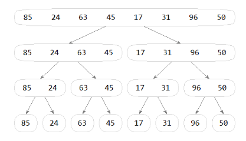
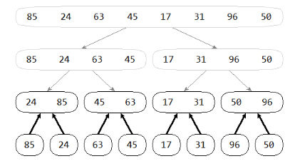
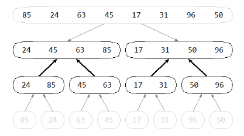
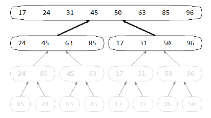

6. Triedenia II.¶
Čo už vieme: triedením rozumieme taký algoritmus, ktorý usporiada vstupnú postupnosť prvkov (napríklad zoznam, n-ticu, spájaný zoznam, …) tak, aby ich poradie zodpovedalo nejakému usporiadaniu, napríklad vzostupne alebo zostupne. Prvky, ktoré takto usporadúvame, sa môžu skladať z viacerých zložiek (častí alebo atribútov), pričom len nejaká ich časť môže slúžiť na porovnávanie usporiadania - časti prvku, podľa ktorého usporadúvame, hovoríme kľúč.
Mnohé z týchto triediacich algoritmov sú in-place (triedenie na mieste), čo znamená, že výsledná usporiadaná postupnosť sa nachádza na tom istom mieste ako bola vstupná. Takýmto triedením je aj pythonovská metóda sort() pre typ zoznam (list).
Iný typ triediacich algoritmov vstupnú postupnosť nemení, ale vytvorí novú usporiadanú postupnosť (najčastejšie ako zoznam, t.j. typ list), ktorá obsahuje tie isté prvky, ako boli na vstupe, ale v správnom poradí. Napríklad, aj štandardná pythonovská funkcia sorted() pracuje na tomto princípe.
Najjednoduchšie triedenia, ktoré už poznáme
Bubble_sort
Algoritmus vymieňa susedné prvky.
je to in-place
zložitosť: počet porovnaní aj výmen O(n**2)
pamäťová zložitosť O(1) (len jednoduché premenné)
def vymen(zoz, i, j):
zoz[i], zoz[j] = zoz[j], zoz[i]
def bubble_sort(zoz):
for i in range(len(zoz)):
for j in range(len(zoz)-1-i):
if zoz[j] > zoz[j+1]:
vymen(zoz, j, j+1)
Takto zapísaná funkcia n-krát prechádza prvky celého zoznamu aj vtedy, keď bol zoznam už utriedeny. Malým vylepšením to urýchlime:
def bubble_sort(zoz):
for i in range(len(zoz)):
b = True
for j in range(len(zoz)-1-i):
if zoz[j] > zoz[j+1]:
vymen(zoz, j, j+1)
b = False
if b:
break
Zložitosť po vylepšení pre utriedený zoznam je O(n)
Min_sort (selection_sort)
Algoritmus hľadá minimálny prvok v ešte neutriedenej postupnosti
je to in-place
zložitosť: počet porovnaní O(n**2)
zložitosť: počet výmen O(n)
pamäťová zložitosť O(1) (len jednoduché premenné)
je efektívnejší ako bubble_sort
Trochu vylepšená verzia:
def min_sort(zoz):
for i in range(len(zoz) - 1):
najmensi = i
for j in range(i + 1, len(zoz)):
if zoz[najmensi] > zoz[j]:
najmensi = j
vymen(zoz, i, najmensi)
Všimnite si, že výmena dvoch prvkov sa robí len po skončení vnútorného cyklu, teda celkový počet výmen je iba O(n).
Insert_sort
Algoritmus vkladá ďalší prvok na správne miesto medzi už utriedené.
je to in-place
zložitosť: počet porovnaní aj výmen O(n**2)
pamäťová zložitosť O(1) (len jednoduché premenné)
je efektívnejší ako min_sort
pre skoro utriedený zoznam je skoro O(n)
Všimnite si, že táto verzia namiesto výmen dvoch hodnôt používa len priradenia:
def insert_sort(zoz):
for i in range(1, len(zoz)):
prvok = zoz[i]
j = i - 1
while j >= 0 and zoz[j] > prvok:
zoz[j + 1] = zoz[j]
j -= 1
zoz[j + 1] = prvok
Quick_sort
Rekurzívny algoritmus, ktorý pracuje na princípe rozdeľuj a panuj:
zvoľ si nejakú hodnotu (tzv. pivot)
rozdeľ prvky zoznamu na menšie ako pivot a väčšie ako pivot
obe časti (rekurzívne) utrieď
utriedené časti spoj do výsledku (už sú v správnom poradí)
Zoznámili sme sa s dvomi verziami - prvá nie je in-place:
def quick_sort(zoz):
if len(zoz) < 2:
return zoz
pivot = zoz[0]
mensie = [prvok for prvok in zoz if prvok < pivot]
rovne = [prvok for prvok in zoz if prvok == pivot]
vacsie = [prvok for prvok in zoz if prvok > pivot]
return quick_sort(mensie) + rovne + quick_sort(vacsie)
Ak by sme chceli týmto algoritmom utriediť už utriedený zoznam, funkcia by za pivota vybrala najmenší prvok, zoznam mensie by bol prázdny, zoznam rovne by obsahoval iba pivot a zoznam vacsie by obsahoval vsetky zvysne prvky. Toto by sa opakovalo pri všetkých prechodoch rekurzie, teda n-krát a keďže každý prechod konktroluje všetky prvky, najhorší prípad má zložitosť O(n**2). A to ešte nie je to najhoršie: ak by sme chceli utriediť väčší zoznam, napríklad 3000-prvkov, táto funkcia spadne na pretečení rekurzie. Zrejme aj pamäťová zložitosť je väčšia ako pri predchádzajúcich algoritmoch: okrem pomocných zoznamov mensie, rovne a vacsie predpokladá aj systémový zásobník pre rekurziu.
Druhá verzia quick_sortu je o trochu efektívnejšia (nepoužíva pomocné zoznamy), ale je tiež rekurzívna:
def quick_sort(zoz):
def quick(z, k):
if z < k:
# rozdelenie na dve časti
index = z
pivot = zoz[index]
for i in range(z + 1, k + 1):
if zoz[i] < pivot:
index += 1
vymen(zoz, index, i)
vymen(zoz, index, z)
# v index je teraz pozícia pivota
quick(z, index - 1)
quick(index + 1, k)
quick(0, len(zoz) - 1)
Pre „dobre“ zvolený zoznam a nie najlepšie vybratý pivot aj táto verzia má najhorší prípad O(n**2) a pre väčšie zoznamy spadne na pretečení rekurzie.
Výber pivota
Už sme videli, že ak je pivotom prvý prvok zoznamu, môže to robiť pre quick_sort problém. Úple rovnaký problém by robil aj posledný, resp. stredný prvok zoznamu - vždy dokážeme zvoliť poradie prvkov tak, aby to malo šancu pretiecť rekurziu.
Preto sa volia iné spôsoby výberu pivota. Pre informatikov je veľmi dôležité správne sa rozhodnúť na výbere pivota. Napríklad sa volia takéto pravidlá pre pivot:
priemer prvého a posledného prvku zoznamu
priemer prvého, stredného a posledného prvku zoznamu
úplne náhodný výber pivota (napríklad pomocou
random.choice())
Merge sort¶
Ďalším rekurzívnym triedením, ktoré je trochu podobné quick_sortu, je triedenie zlučovaním, teda Merge sort. Základný postup algoritmu je:
ak má zoznam aspoň 2 prvky, rozdeľ ho na dve rovnaké časti (napríklad veľkosti
n//2an-n//2)rekurzívne zavolaj triedenie zvlášť pre každú z častí - dostaneme 2 utriedené časti celého zoznamu
zlúč (merge) obe utriedené časti do výsledného zoznamu
Ideu rozdeľovania zoznamu na polovice vidíme (tzv. merge_sort strom):
{kind=link}

Toto bola 1. fáza algoritmu, keď sa zoznam rozdelil na dve polovice a pre každú polovicu sa spustilo rekurzívne volanie, t.j. opäť rozdelenie na polovice. Toto pokračovalo dovtedy, kým bolo čo deliť, teda 1-prvkový zoznam sa už ďalej nedelil.
Teraz prichádza fáza návratu z rekurzie, keď sa majú dve polovice zoznamu zlúčiť (tzv. merge) do utriedeného celku. Lenže vďaka rekurzii sa najprv budú zlučovať dve najvnorenejšie polovice, t.j. 1-prvkové zoznamy: z nich sa vytvoria utriedené dvojprvkové:
{kind=link}

Na tomto obrázku vidíme princíp triedenia a nie skutočný algoritmus, lebo tu sme zrealizovali vynáranie z rekurzie naraz vo všetkých prípadoch, keď boli zoznamy jednoprvkové. Pri ďalšom vynáraní sa z rekurzie opäť prebehne fáza zlučovania, keď sa z utriedených dvojprvkových zoznamov vytvoria štvorprvkové:
{kind=link}

Takto to celé pokračuje, až kým sa postupne nezlúčia všetky polovice a teda nedostaneme výsledný utriedený zoznam:
{kind=link}

Zapíšeme tento rekurzívny algoritmus ako in-place triedenie, t.j. taká funkcia, ktorá modifikuje samotný zoznam a nevracia žiadnu hodnotu:
def merge_sort(zoz):
if len(zoz) < 2:
return
stred = len(zoz)//2
zoz1 = zoz[:stred]
zoz2 = zoz[stred:]
merge_sort(zoz1)
merge_sort(zoz2)
# zlučovanie oboch častí do výsledného zoznamu:
i = j = 0
while i + j < len(zoz):
if j == len(zoz2) or i < len(zoz1) and zoz1[i] < zoz2[j]:
zoz[i+j] = zoz1[i]
i += 1
else:
zoz[i+j] = zoz2[j]
j += 1
Rýchlosť tohto triedenia je podobná ako quick_sort, pričom rekurzia sa vnára log n krát. Všimnite si, že sa tu veľmi intenzívne využívajú pomocné zoznamy - skúste odhadnúť, aká je celková veľkosť všetkých pomocných zoznamov.
Ak by sme netriedili pythonovský zoznam, ale spájaný zoznam (napríklad s podobnými metódami ako pre SpajanyZoznam), mohli by sme výrazne ušetriť pomocnú pamäť: totiž namiesto zoz1 a zoz2 , ktoré sú veľké pythonovské zoznamy, môžeme využiť referencie na jednotlivé prvky zoznamu. Teda v prvej fáze algoritmu sa do dvoch referencií priradí prvý a stredný prvok pôvodného zoznamu - na tomto mieste sa zoznam rozdelí na dva. Oba tieto zoznamy sa rekurzívne utriedia a nakoniec sa oba už utriedené zoznamy zlúčia do jedného - pri zlučovaní sa nevytvárajú nové prvky, ale sa iba presmerníkujú existujúce.
Heap sort¶
Ďalšia verzia triedenia Heap sort využíva dátovú štruktúru halda, ktorá má veľmi užitočné vlastnosti:
Halda implementovaná v zozname
Keďže halda je „skoro“ úplný binárny strom, nemusíme ju realizovať pomocou spájanej štruktúry, ale použijeme pythonovský zoznam zoz (typ list):
do zoznamu budeme prvky stromu ukladať po úrovniach:
najprv koreň (do 0. prvku)
potom dva vrcholy z ďalšej úrovne (obaja potomkovia koreňa)
za tým 4 vrcholy z 2. úrovne (najprv obaja potomkovia ľavého potomka koreňa, potom obaja potomkovia pravého potomka koreňa),
… atď.
na koniec všetky zvyšné vrcholy z poslednej (možno neúplnej) úrovne
hĺbka tohto stromu je log n
pre potomkov a rodiča vrcholu s indexom
iplatí:rodič (predok) má index
(i-1) // 2ľavý potomok má index
2 * i + 1pravý potomok má index
2 * i + 2
Na takejto dátovej štruktúre si ukážeme dve dôležité operácie:
vloženie nového prvku do haldy
vyhodenie minimálneho prvku, t.j. koreň haldy
Operácia vloženie nového prvku
aby sme zachovali vlastnosť (skoro) úplného binárneho stromu, pridáme vrchol na úplný koniec (za posledný prvok v zozname), teda
zoz.append()asi sme tým pokazili pravidlo medzi vrcholom a jeho rodičom: haldu treba upratať - budeme prebublávať v halde od tohto prvku nahor smerom ku koreňu:
ak je práve pridaný prvok
z[i]menší ako jeho rodičz[(i-1) // 2]), vymení ho s rodičom a znovu kontroluje už túto jeho novú pozíciu s novým rodičomtoto sa opakuje, kým nenatrafí na menšieho rodiča (teda je to už OK) alebo sa dostane až do koreňa stromu
takto sa opraví celá halda
Operácia vyhodenie minimálneho prvku
nesmieme naozaj vyhodiť 0. prvok zoznamu (koreň stromu), lebo by sa halda pokazila tak, že jej oprava by bola príliš náročná, namiesto toho:
vyhodený koreň nahradíme posledným prvkom v halde (najpravejší v najnižšej úrovni) a haldu (zoznam) pritom o 1 skrátime
asi sme tým opäť haldu pokazili - budeme tento prvok kontrolovať s jeho potomkami a vymieňať, t.j. budeme prebublávať smerom nadol:
práve presťahovaný 0. prvok zoznamu
z[0]porovnáme s oboma jeho potomkami (prvkyz[2*i + 1]az[2*i + 2])ak je jeden z nich menší ako spracovávaný vrchol, tak menší z nich vymeníme so spracovávaným vrcholom a znovu túto novú pozíciu porovnávame s jeho potomkami
toto sa opakuje, kým neprídeme do listu stromu (vrchol už nemá ani jedného potomka), alebo obaja potomkovia už nemajú menšiu hodnotu
takto sa opraví celá halda
Triedenie pomocou haldy - heap sort
vytvor haldu - postupným pridávaním do zoznamu (operácia vlož s prebublávaním nahor)
postupne odoberaj minimálny prvok z koreňa haldy (operácia vyhodenie minimálneho s prebublávaním nadol)
tieto prvky postupne ukladaj do výsledného zoznamu
Zapíšme heap_sort aj s pomocnými funkciami:
def heap_sort(zoz):
def vloz(hodnota):
# nový prvok pridáme na koniec
halda.append(hodnota)
# teraz to prebublá nahor
i = len(halda) - 1
while i > 0: # kym i nie je koreň
# ak je hodnota < ako rodič: vymeň ich
rodic = (i-1) // 2
if halda[i] < halda[rodic]:
halda[i], halda[rodic] = halda[rodic], halda[i]
i = rodic
else:
break # hotovo
def vyhod_min():
assert len(halda) > 0
# vymeníme posledný s prvým a haldu o posledný skrátime
halda[0], halda[-1] = halda[-1], halda[0]
vysl = halda.pop()
# celé je to halda okrem halda[0]
i = 0 # spracovavany vrchol
while True:
# nájdem menšieho potomka - ak nie je, break
lavy = i*2 + 1
if lavy >= len(halda):
break
mensi = lavy
pravy = i*2 + 2
if pravy < len(halda) and halda[pravy] < halda[lavy]:
mensi = pravy
# vrchol i vymeníme s menším alebo skončím
if halda[mensi] < halda[i]:
halda[mensi], halda[i] = halda[i], halda[mensi]
i = mensi
else:
break
return vysl
halda = []
for x in zoz: # vyrob haldu
vloz(x)
for i in range(len(zoz)):
zoz[i] = vyhod_min()
Tento algoritmus môžeme ešte vylepšiť:
haldu budeme organizovať opačne: v koreni je maximálny prvok a všetci potomkovia nie sú väčší
haldu vytvárame priamo vo vstupnom zozname: (pomocou algoritmu heapify)
okrem posledného riadku haldy postupne každý prvok (od konca) prebublá smerom nadol
maximálny prvok v koreni neodstraňujeme ale presunieme na koniec zoznamu a zapamätáme si jeho nový koniec
namiesto funkcie
vyhod_min()použijeme pomocnú funkciunadol(), ktorá upraví haldu prebublávaním nadol odi-teho prvku v zozname
Teraz heap_sort môže vyzerať takto:
def heap_sort(zoz):
def nadol(i):
while True:
lavy = i*2 + 1
if lavy >= koniec:
return
vacsi = lavy
pravy = i*2 + 2
if pravy < koniec and zoz[pravy] > zoz[lavy]:
vacsi = pravy
if zoz[i] < zoz[vacsi]:
zoz[vacsi], zoz[i] = zoz[i], zoz[vacsi]
i = vacsi
else:
return
koniec = len(zoz)
for v in reversed(range(len(zoz)//2)): # heapify
nadol(v)
#print('priprav haldu', *zoz)
while koniec > 0:
zoz[0], zoz[koniec-1] = zoz[koniec-1], zoz[0]
koniec -= 1
nadol(0)
#print('prechod', *zoz[:koniec], '|', *zoz[koniec:])
Táto verzia triedenia sa dá aj vizualizovať, napríklad:
p = [random.randint(10, 600) for i in range(1600)]
heap_sort(Vizualizuj(p))
Bucket sort¶
Za istých podmienok, keď poznáme vlastnosti triedených hodnôt, vieme zostrojiť triedenie, ktoré má zložitosť napríklad O(n). Predstavme si situáciu, že o triedených hodnotách (kľúčoch) vieme, že sú to celé čísla z intervalu <0, K-1>, teda K rôznych hodnôt. Na utriedenie takého zoznamu použijeme tzv. priehradkové triedenie (bucket sort):
priprav
Kprázdnych priehradiek (napríklad polia, alebo zoznamy)postupne prejdi všetky prvky vstupného zoznamu a na základe hodnoty (kľúča) ich zaraď na koniec príslušnej priehradky
ak treba, ešte uprav (možno nejako usporiadaj) všetky priehradky
spoj priehradky do výsledného zoznamu
Ak by sa v 3. kroku tieto priehradky ďalej rekurzívne triedili, mali by sme klasické rozdeľuj a panuj.
Dôležitou vlastnosťou tu je stabilita triedenia: ak majú dva prvky zoz[i] a zoz[j] rovnakú hodnotu (kľúč) a pritom i<j, tak v utriedenom výslednom zozname sa bude pôvodná hodnota zoz[i] nachádzať pred zoz[j]. Niektoré verzie vyššie uvedených triedení boli stabilné (napríklad bubble_sort, insert_sort, ale aj prvý quick_sort, ktorý ešte nebol in-place), iné nie sú stabilné (napríklad min_sort).
Radix sort
Pre bucket sort je stabilita dôležitá napríklad vtedy, keď sa táto idea používa pre tzv. radix sort. Toto triedenie pracuje na princípe priehradiek, ale vychádza sa z toho, že triedená hodnota (kľúč) sa skladá z viacerých zložiek, pričom každá z nich má relatívne malý interval hodnôt. Napríklad kľúčom je 6-ciferné číslo (číslo z intervalu 0 a 999999, zložkami sú cifry čísla), kľúčom je znakový reťazec ohraničenej veľkosti (napríklad max. 10 znakov, zložkami sú znaky znakového reťazca), kľúčom je dvojica súradníc, z ktorých každá je z intervalu -100 a 100, atď.
predpokladáme, že kľúč sa skladá z
kzložiek (prípadne je doplnený nulovými hodnotami zľava alebo sprava podľa významu)priprav toľko priehradiek, koľko rôznych hodnôt má
k-ta zložka kľúča (posledná cifra, posledný znak, …)postupne presuň všetky prvky zoznamu do príslušných priečinkov (vždy na koniec momentálneho obsahu) - rozhoduj sa len na základe
k-tej zložkypostupne spoj všetky neprázdne priečinky do jedného celku, prejdi na predposlednú zložku (
k=k-1) a opakuj od 2. krokukeď prešiel tento postup pre všetky zložky, po poslednom spojení všetkých priečinkom máme utriedený celý zoznam
Jeden prechod tohto algoritmu má zložitosť O(n), lebo každý prvok sa najprv presunie na koniec nejakého priečinka (čo je O(1)), to je spolu O(n) a potom sa všetky priečinky spoja do jedného celku, čo nebude zložitejšie ako O(n). Keďže sa toto opakuje pre k krát pre všetky zložky, celková zložitosť radix sortu je O(k * n), pre malé k je to O(n)
Hľadanie prvku v zozname
V praxi sa stretáme s úlohami, v ktorých máme nejaký n prvkový neutriedený zoznam a my potrebujeme čo najrýchlejšie nájsť v poradí k -ty najmenší (alebo najväčší) prvok zoznamu. Pre k=0 to znamená nájsť minimum, čo vieme urobiť so zložitosťou O(n). Podobne pre k=1 vieme nájsť druhé minimum na O(n), ale už je to trochu zložitejšie ako prvé minimum. Tiež pre k=n-1 je nájdenie maxima jednoduchá úloha so zložitosťou O(n). Ale ako je to vo všeobecnosti s nájdením k -teho najmenšieho prvku? Ak by sme použili nejaké rýchle triedenie, môžeme zapísať:
kty_prvok = sorted(zoznam)[k]
Zrejne takýto algoritmus má už zložitosť O(n log n).
Dá sa to ale aj rýchlejšie: jedna z možností je využiť ideu rekurzívneho quick sortu:
def select(zoz, k):
if len(zoz) == 1:
return zoz[0]
pivot = random.choice(zoz)
mensie = [prvok for prvok in zoz if prvok < pivot]
if k < len(mensie):
return select(mensie, k)
rovne = [prvok for prvok in zoz if prvok == pivot]
if k < len(mensie) + len(rovne):
return pivot
vacsie = [prvok for prvok in zoz if prvok > pivot]
return select(vacsie, k - len(mensie) - len(rovne))
Tento algoritmus sa podobne ako quick sort rekurzívne vnára len do jednej z častí (mensie alebo vacsie), len do tej do ktorej patrí dané k. Zložitosť tohto algoritmu môžeme počítať podobne ako pri quick_sorte, kde sme uvažovali s približne polovičným rozdelením zoznamu na dve časti. V prvom prechode treba prejsť všetky prvky zoznamu, aby sme ich rozdelili do príslušných pomocných zoznamov, teda zložitosť je n. V druhom rekurzívnom volaní má zoznam približne polovicu, teda n/2. V každom ďalšom je to približne polovica z predchádzajúcej dĺžky. Toto skončí buď nájdením prvku (v časti rovne) alebo keď má celý zoznam dĺžku 1. Vieme zapísať celkový počet:
spolu = n + n/2 + n/4 + n/8 + ... + 1
Z matematiky vieme, že toto sa blíži k 2*n, teda celková zložitosť algoritmu select() je O(n).
python built-in sort
tim_sort má zložitosť O(n log n), je in-place
je hybridný:
odvodený od merge_sort
využíva insert_sort
používajú ho, napríklad, aj:
Java
Android
V8 - JavaScript
Swift
Rust
Cvičenie¶
Poznámka
riešenia úloh ulož do jedného súboru a odovzdaj na úlohový server https://vektor.fmph.uniba.sk/
testovací server tieto ulohy nebude testovať, vyrieš a odovzdaj ich všetky okrem tých, ktoré sú označené znakom -
prvé tri riadky súboru s riešením musia obsahovať:
# 6. cvicenie # student: Janko Hrasko # datum: 24.3.2026
zrejme ako študenta uvedieš svoje meno.
Naprogramuj algoritmus quick_sort tak, aby sa úsek kratší ako nejaké dané
Xtriedil už len pomocou insert_sort (triviálny prípad rekurzie) - toto tredenie insert_sort uprav tak, aby triedilo len zadaný úsek zoznamu (a nie celý zoznam).otestuj korektnosť pre rôzne zvolenú veľkosť
X, napríklad 10, 50, 100, … a to pre ten istý veľký náhodný zoznam
Zrealizuj algoritmus quick_sort, ktorý je in-place, a to bez rekurzie pomocou vlastného zásobníka:
do zásobníka treba ukladať dvojice (začiatok, koniec úseku)
algoritmus teda najprv rozhádže prvky zoznamu do dvoch úsekov (menšie ako pivot a väčšie ako pivot), potom hranice oboch týchto úsekov vloží do zásobníka (namiesto rekurzívneho volania) a v cykle vyberie z vrchu zásobníka aktuálne spracovávaný úsek, spracuje ho a prípadne do zásobníka opäť vloží hranice úsekov, …
do zásobníka najprv vkladaj väčší z dvoch úsekov na triedenie a potom až menší z nich (zamysli sa prečo)
- Do algoritmu triedenia
merge_sortz prednášky sme vložili kontrolné tlače:def merge_sort(zoz): if len(zoz) < 2: return stred = len(zoz)//2 zoz1 = zoz[:stred] zoz2 = zoz[stred:] merge_sort(zoz1) merge_sort(zoz2) print(*zoz1, '+++', *zoz2, end=' => ') i = j = 0 while i + j < len(zoz): if j == len(zoz2) or i < len(zoz1) and zoz1[i] < zoz2[j]: zoz[i+j] = zoz1[i] i += 1 else: zoz[i+j] = zoz2[j] j += 1 print(*zoz)
Najprv ručne pre najaký konkrétny vstupný zoznam zisti, ako bude vyzerať tento kontrolný výpis.
Riešenie
Otestujeme, napríklad:
z = [8, 13, 7, 10, 5, 15, 12, 17, 9, 14, 4, 11, 18, 16, 6] print('zoznam =', z) merge_sort(z)
dostaneme výstup:
zoznam = [8, 13, 7, 10, 5, 15, 12, 17, 9, 14, 4, 11, 18, 16, 6] 13 +++ 7 => 7 13 8 +++ 7 13 => 7 8 13 10 +++ 5 => 5 10 15 +++ 12 => 12 15 5 10 +++ 12 15 => 5 10 12 15 7 8 13 +++ 5 10 12 15 => 5 7 8 10 12 13 15 17 +++ 9 => 9 17 14 +++ 4 => 4 14 9 17 +++ 4 14 => 4 9 14 17 11 +++ 18 => 11 18 16 +++ 6 => 6 16 11 18 +++ 6 16 => 6 11 16 18 4 9 14 17 +++ 6 11 16 18 => 4 6 9 11 14 16 17 18 5 7 8 10 12 13 15 +++ 4 6 9 11 14 16 17 18 => 4 5 6 7 8 9 10 11 12 13 14 15 16 17 18
Zapíš rekurzívny in-place algoritmus merge_sort, ktorý bude triediť prvky spájaného zoznamu. Funkcia by nemala meniť hodnoty vo vrcholoch spájaného zoznamu len bude meniť referencie
next. Funkcia vráti referenciu na nový začiatok zoznamu. Napríklad:class Vrchol: def __init__(self, data, next=None): self.data, self.next = data, next def merge_sort(zoz): ... zoz = Vrchol(...) zoz = merge_sort(zoz) # výpis prvkov zoznamu
Zapíš nerekurzívny merge_sort, ktorý usporiada prvky pythonovského zoznamu (typu
list) metódou zdola nahor:v prvom prechode postupne „zlúči“ prvky 0 a 1, 2 a 3, 4 a 5, …
v druhom prechode „zlúči“ dvojprvkové zoznamy 0:1 a 2:3, 4:5 a 6:7, 8:9 a 10:11, …
v treťom prechode bude zlučovať štvorprvkové úseky 0:3 a 4:7, 8:11 a 12:15, …
zrejme takýchto prechodov bude približne log(n)
Funkcia
merge_sortby mohla vyzerať nejako takto (zrejme je in-place):def merge_sort(zoz): def merge(a, b, c): # prvý úsek range(a, b), druhý úsek range(b, c) ... n = len(zoz) k = 1 while k < n: i = 0 while i + k < n: merge(i, i + k, min(i + 2 * k, n)) i += 2 * k k += k
Svoje riešenie otestuj na korektnosť.
- Predpokladaj, že na vstupe máme tieto hodnoty:
8, 13, 7, 10, 5, 15, 12, 17, 9, 14, 4, 11, 18, 16, 6
ručne vytvor z tohto zoznamu haldu (postupne pridávaj najprv do prázdneho stromu rovnako ako operácia
vloz())ručne z haldy trikrát odstráň minimálny prvok (operácia
vyhod_min())priebeh ukladania do haldy (aj vyberania najmenšieho) si môžeš vizualizovať, napríklad aj na stránke Heap Visualization
Riešenie
halda = 4 5 6 9 7 11 8 17 13 14 10 15 18 16 12 min = 4 halda po vyhod_min = 5 7 6 9 10 11 8 17 13 14 12 15 18 16 min = 5 halda po vyhod_min = 6 7 8 9 10 11 16 17 13 14 12 15 18 min = 6 halda po vyhod_min = 7 9 8 13 10 11 16 17 18 14 12 15
Napíš funkciu
kontrola_na_haldu(zoz), ktorá skontroluje, či daný zoznam spĺňa podmienky haldy. Napríklad:>>> zoz = [8, 13, 7, 10, 5, 15, 12, 17, 9, 14, 4, 11, 18, 16, 6] >>> kontrola_na_haldu(zoz) False
Riešenie
def kontrola_na_haldu(zoz): for i in range(1, len(zoz)): rodic = (i-1) // 2 if zoz[rodic] > zoz[i]: return False return True
Jedna z úloh priebežného testu v minulých rokoch sa venovala haldám:
Z rôznych čísel 1 až 10 vytvor haldu (v koreni s indexom 0. je minimum) v 10-prvkovom zozname tak, aby:
v prvku zoznamu s indexom 4 bola maximálne možná hodnota
v prvku zoznamu s indexom 4 bola minimálne možná hodnota
Pre obe podúlohy zrealizuj aj operáciu
vyhod_min().Riešenie
Riešení rozloženia haldy je veľa, napríklad:
maximálna možná hodnota na indexe 4. je
9:halda = [1, 2, 3, 4, 9, 5, 6, 7, 8, 10] halda po vyhod_min = 2 4 3 7 9 5 6 10 8
minimálna možná hodnota na indexe 4. je
3:halda = [1, 2, 4, 5, 3, 6, 7, 8, 9, 10] halda po vyhod_min = 2 3 4 5 10 6 7 8 9
- Už poznáme štruktúru front (
Queue), ktorá pomocou metódenqueue,dequeueafrontdokáže s touto štruktúrou pracovať. V praxi sa nám môže hodiť prioritný front, pomocou ktorého vieme pre každý vložený údaj zadať aj kľúč a ten bude určovať prioritu údaja vo fronte. Štruktúra si bude udržiavať utriedený zoznam dvojíc(key, value), pričom na začiatku je minimálna hodnota kľúča. Zapíš metódy tejto triedy:class EmptyError(Exception): pass class PriorityQueue: def __init__(self): self._data = [] def add(self, key, value): # pridá novú dvojicu ... def min(self): # vráti dvojicu s minimálnym kľúčom if self.is_empty(): raise EmptyError return ... def remove_min(self): # vráti dvojicu s minimálnym kľúčom, dvojicu vyhodí zo zoznamu if self.is_empty(): raise EmptyError return ... def is_empty(self): return len(self._data) == 0
Testovanie by mohlo vyzerať:
p = PriorityQueue() for key, value in (5,'A'),(9,'B'),(3,'C'),(7,'D'),(4,'E'),(6,'F'): p.add(key, value) print(f'{p._data = }') print(f'{p.min() = }') while not p.is_empty(): print(f'{p.remove_min() = }, {p._data = }') print(f'{p.is_empty() = }') print(f'{p.min() = }, {p._data = }')
s výpisom:
p._data = [(3, 'C'), (4, 'E'), (5, 'A'), (6, 'F'), (7, 'D'), (9, 'B')] p.min() = (3, 'C') p.remove_min() = (3, 'C'), p._data = [(4, 'E'), (5, 'A'), (6, 'F'), (7, 'D'), (9, 'B')] p.remove_min() = (4, 'E'), p._data = [(5, 'A'), (6, 'F'), (7, 'D'), (9, 'B')] p.remove_min() = (5, 'A'), p._data = [(6, 'F'), (7, 'D'), (9, 'B')] p.remove_min() = (6, 'F'), p._data = [(7, 'D'), (9, 'B')] p.remove_min() = (7, 'D'), p._data = [(9, 'B')] p.remove_min() = (9, 'B'), p._data = [] p.is_empty() = True EmptyError
Riešenie
class EmptyError(Exception): pass class PriorityQueue: def __init__(self): self._data = [] def add(self, key, value): i = len(self._data) while i > 0 and key < self._data[i - 1][0]: i -= 1 self._data.insert(i, (key, value)) def min(self): if self.is_empty(): raise EmptyError return self._data[0] def remove_min(self): if self.is_empty(): raise EmptyError return self._data.pop(0) def is_empty(self): return len(self._data) == 0
Zrealizuj metódy triedy
PriorityQueuetak, že atribút_datasi bude udržiavať dvojice(key, value)ako haldu a teda operácieaddaremove_minbudú vkladať do haldy, resp. vyberať z haldy aj s príslušným upratovaním.Svoje riešenie otestuj na korektnosť.
Naprogramuj triedenie radix_sort, ktoré bude triediť zoznam celých čísel:
v prvom prechode sa do 10 priehradok (vedierok) poukladajú všetky čísla podľa poslednej cifry (každé číslo sa do priehradky vkladá na jej koniec)
potom sa obsahy priehradok postupne „zhrnú“ do jedného zoznamu, aby sa pokračovalo druhým prechodom
v druhom prechode sa do 10 priehradok tieto čísla postupne poukladajú podľa predposlednej (druhej od konca) cifry
opäť sa priehradky zhrnú do jedného zoznamu
…
toto sa opakuje pre ďalšie a ďalšie cifry, až kým sa takto nespracovali aj najväčšie čísla v zozname
Zrejme počet prechodov bude podľa počtu cifier vo vstupnom zozname.
Riešenie otestuj s nejakým väčším zoznamom aspoň 6-ciferných čísel.
6. Týždenný projekt¶
Poznámka
riešenie úlohy ulož do textového súboru s príponou
.pya odovzdaj na testovací server https://vektor.fmph.uniba.sk/prvé tri riadky súboru s riešením musia obsahovať:
# 6. tyzdenny projekt # student: Janko Hraško # datum: 10.4.2026
zrejme ako študenta uvedieš svoje meno, dátum uprav podľa dátumu odovzdania
nepoužívaj
importaniglobal
Triedenie tree_sort
Naprogramuj tree_sort. Ten funguje tak, že sa najprv vyrobí binárny vyhľadávací strom (BVS) a z neho sa pomocou inorder získa utriedená postupnosť. Binárny strom BVS sa ale vybuduje trochu inak:
namiesto reprezentácie vrcholov stromu, v ktorej všetky vrcholy obsahujú atribúty
data,left,right, okrem zadanejn-prvovej postupnostidatapre celý strom (typutuple) použijeme len dvan-prvkové zoznamy (typulist)0-ty prvok postupnosti
datareprezentuje koreň stromui-ty vrchol stromu popisujei-ty prvok vstupu (data[i]), pričom ľavý potomok (jeho index) je vleft[i]a pravý je vright[i], zrejme koreň má ľavého potomka vleft[0]a pravého vright[0]ak niektorý potomok pre nejaký vrchol neexistuje, príslušný prvok zoznamu
left, resp.rightmá hodnotuNonena vytvorenie BVS využi metódu
append(value), ktorá na správne miesto pridá ďalší vrcholzrejme najprv vloží zadanú hodnotu na koniec postupnosti
data, rozšíri zoznamyleftarighto hodnotuNonea pridá túto novú hodnotu do BVS, t.j. opraví jeden index v zoznameleftaleboright
keďže vo vstupnej postupnosti sa niektorá hodnota môže nachádzať aj viackrát, v strome sa rovnaké prvky vkladajú do pravého podstromu, teda v ľavom podstrome sú všetky prvky menšie, v pravom sú väčšie alebo rovné
Po skonštruovaní stromu metódou append(), teda po skonštruovaní dvoch zoznamov left a right, algoritmus triedenia zavolá metódu inorder(), ktorá postupne vygeneruje utriedenú postupnosť prvkov pôvodnej postupnosti. Metóda inorder() bude generátor, teda hodnoty v strome bude postupne vracať pomocou yield.
Okrem dvoch pomocných zoznamov left a right nepoužívaj ďalšie pomocné zoznamy (ani iné štruktúry), hoci v inicializácii triedy Tree vytvoríš kópiu pôvodnej postupnosti (ako tuple), ktorú zrejme metódy triedy meniť nebudú.
Použi tieto deklarácie:
class Tree:
def __init__(self, post=()):
self.data = ()
self.left = []
self.right = []
...
def append(self, value):
...
@property
def height(self):
...
def inorder(self, reverse=False, index=False):
...
def postorder(self):
...
def leaves(self):
...
def tree_sort(post, reverse=False, index=False):
return tuple(Tree(post).inorder(reverse, index))
kde
__init__(post)volaním metódyappend()z danej postupnosti vytvorí BVSmetóda
append(value)vloží do stromu prvok s danou hodnotou, teda v skutočnosti bude modifikovať len n-ticudataa zoznamyleftarightmetóda
inorder(reverse, index)vráti inorder-postupnosť prvkov zoznamu ako generátorparameter
reverse(rovnako ako pre štandardnú funkciusorted()) označuje, že metóda vygeneruje utriedenú postupnosť v opačnom poradí prvkovparameter
indexoznačuje, že metóda vygeneruje indexy utriedenej postupnosti do pôvodnej postupnostidata
property
heightvráti výšku binárneho stromumetóda
postorder()vráti generátor postorder postupnosti hodnôt v stromefunkciu
tree_sort()nemá zmysel modifikovať, lebo spúšťať sa bude táto pôvodná verziametóda
leaves()vráti generátor hodnôt v strome, ktoré sú listami (v ľubovoľnom poradí)
Program môžeš testovať, napríklad takto:
if __name__ == '__main__':
t = Tree(map(int, '27 25 34 23 25 31 28 30'.split()))
t.append(21)
print(f'{t.data = }')
print(f'{tuple(t.inorder()) = }')
print(f'{tuple(t.inorder(index=True)) = }')
print('>>>>>>', [t.data[ix] for ix in t.inorder(index=True)])
print(f'{tuple(t.inorder(reverse=True)) = }')
print(f'{tuple(t.postorder()) = }')
print(f'{t.height = }')
print(f'{tuple(t.leaves()) = }')
print(f'{t.left = }')
print(f'{t.right = }')
Výpis potom bude:
t.data = (27, 25, 34, 23, 25, 31, 28, 30, 21)
tuple(t.inorder()) = (21, 23, 25, 25, 27, 28, 30, 31, 34)
tuple(t.inorder(index=True)) = (8, 3, 1, 4, 0, 6, 7, 5, 2)
>>>>>> [21, 23, 25, 25, 27, 28, 30, 31, 34]
tuple(t.inorder(reverse=True)) = (34, 31, 30, 28, 27, 25, 25, 23, 21)
tuple(t.postorder()) = (21, 23, 25, 25, 30, 28, 31, 34, 27)
t.height = 4
tuple(t.leaves()) = (21, 25, 30)
t.left = [1, 3, 5, 8, None, 6, None, None, None]
t.right = [2, 4, None, None, None, None, 7, None, None]
V tomto prípade pre zoznamy left a right platí:
koreň (index 0) s hodnotou 27 má ľavého potomka vrchol 1 (s hodnotou 25) a pravého potomka vrchol 2 (s hodnotou 34)
vrchol na indexe 1 s hodnotou 25 má ľavého potomka vrchol 3 (s hodnotou 23) a pravého potomka vrchol 4 (s hodnotou 25)
vrchol s indexom 2 (hodnota 34) má iba ľavého potomka vrchol 5 (hodnota 31)
vrchol s indexom 3 (hodnota 23) má iba ľavého potomka vrchol 8 (hodnota 21)
vrchol s indexom 6 (hodnota 28) má iba pravého potomka vrchol 7 (hodnota 30)
…
Obmedzenia
tvoje riešenie odovzdaj v súbore, napríklad
riesenie.py, pričom sa v ňom bude nachádzať len jedna definícia triedyTreea jedna globálna funkciatree_sort()okrem atribútov
data,leftarightnepoužívaj žiadne ďalšie atribúty ani ďalšie pomocné metódytvoj program by nemal počas testovania testovačom nič vypisovať (žiadne testovacie
print())
Môžeš si stiahnuť 2tp06.zip s testovacími súbormi 'subor1.txt', 'subor2.txt', 'subor3.txt', …, ktoré bude používať testovač.